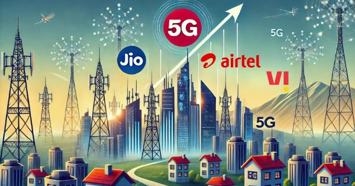

TRANSFORMATION OF INDIAN TELECOM INDUSTRY
Mon Dec 2 2024
TRANSFORMATION OF INDIAN TELECOM INDUSTRY
Introduction
The Indian market is one of the most diversified and one of the complex markets in the world, for any company of any domain to take over the control of the Indian consumers they have to keep in mind that they provide services at lower costs than their competition as well as the quality and effectiveness of their services are also better than the rest.
The Transformation in the Indian telecom industry is a very good example to these facts about Indian market and how the consumer psychology works. It all began when Reliance Jio took over the telecom sector by disrupting the market in 2016 leading to widespread consumers switching to Jio as their ISP (Internet Service Provider) and company marvels Airtel reforming their strategies and merger of companies namely Vodafone & Idea to stay relevant in the market.
How the transformation started?
Before 2016, the number of internet users in India were only 240 million which is only about 18% of the Indian population with the entry of Jio in 2016 the whole telecom market disrupted, there was a widespread shift of the customer base of existing companies, Airtel, Vodafone & Idea to Jio because of the strategies adapted by the Reliance Jio that is the aggressive pricing of data provided to users, massive investment on infrastructure and providing a digital ecosystem to the customer which made them a favorite choice of customers as well as made India the second largest consumer of internet in the whole world after China with over 900 million internet users. Let’s take a detailed look at the strategies taken by Reliance Jio.
Strategies & Actions taken by Jio
Aggressive Pricing:
Jio adapted the policy of providing the quality data to people at a significantly lower rates than their competitors by providing free voice calls for life and data plans were 90% lower than any other company in their competition making their pricing the most essential role in marketing of their data plans as well as making an immediate impact not only in the industry but also in people’s minds because this served users with a viable option in market.
Massive infrastructure investment:
A company can only provide this amount of quality service at this cheap rate only when there is a huge investment from their end and this was beautifully strategized by Mukesh Ambani, his long-term vision and action is the reason why Jio succeeded in grasping the market. Reliance invested heavily in 4G infrastructure by investing 150,000 crore rupees initially for providing the services that made their superior public image and overthrowing their competition.
Customer Acquisition:
One of the greatest things about Jio was that they brought new and innovative ideas to attract more user base by providing free SIMs & introductory offers which provided cost-free quality services. Another key aspect that it played was that it acquired consumer trust because eventually the product got marketed by the word of mouth from consumer to consumer.
Digital Ecosystem:
Yet another innovative step taken by Jio was the introduction of Jio apps like Jio Cinema and devices like JioPhone and JioFiber which build brand loyalty and created an atmosphere which led to a position where internet and network meant Jio and with this they dominated their competition and build an indomitable trust among the consumer.
Strategies & Actions taken by other brands
High focus on quality:
Brands notably Airtel focused on providing better data speed and customer experience, they constantly improved their products and services so that to retain their customers and can have an edge over Jio and other competitors. This uniqueness led to their relevancy as well as meant a comeback for Airtel in the market as they were able to provide network at remote locations where Jio failed to provide network.
Competitive Pricing:
To match Jio’s offerings improving the quality was not enough so Airtel quickly adapted by slashing their service prices so that the consumers stay with them as pricing is very important in this sector as all the companies are providing the same service so you can only emerge at the top by being unique with both quality and economic feasibility.
Diversification:
Airtel showed agility and readiness by introducing OTT services like Airtel Xstream in response to Jio Cinema and also introducing UPI options like Airtel Payments Bank. It is very crucial for companies to adapt and readily respond to their rivals move by taking note of rival’s steps and comeback with more good innovations.
Current Scenario
This Revolution led to transformation of Indian telecom market forever by making India the second largest consumer of data in the world, India showed a huge increase when in only 8 years from 2016 to 2024 it showed a rapid increase in the percentage of users in the whole nation from 18% to 85% which is a very big leap into the telecom stratosphere. It not only helped in the growth of this industry but also played an important role in success of OTT platforms like NETFLIX, Amazon Prime Video, Hotstar in India because now everyone has access to internet at affordable prices moreover Bollywood industry was also impacted as they now have an option to partner with these platforms as they were popularized by partnering with the ISPs in the longer run.
Entrepreneurship Learnings
Identification of Problem:
Jio identified the gap (high data costs) and disrupted market with innovative pricing and services. We should know the real demand of the market in the current situation the problem and offer a value proposition that competitors can’t ignore.
First-Mover Advantage in Tech:
You should either be the first or be the best in the business, Jio’s focus on a 4G-only network positioned it as a futuristic player. The planning of Jio of investing in the right technology at the right time is the reason why it became a success and emerged above all.
Customer Centric Approach:
Building trust and onboarding users early ensures long term loyalty, this ensured the leverage of Jio over rival companies and for any company building customer relationships is the first step that should be taken if a company is able to build good user relationship, then it ensures that company is going to stay in the market for long term.
Adaptability and Agility:
Airtel’s quick adaptations to Jio’s disruption helped it survive and thrive in the competitive market created by Jio. Airtel remained persistent and didn’t get intimidated by Jio but instead answered them with wit and resilience. Adaptability is the key to stay relevant in the rapidly changing markets.
Strategic Partnerships:
Companies like Google and Facebook heavily invested in the Jio’s campaign and were benefitted in the longer run as their user base heavily increased and they were able to get more Indian user base. Thus, collaborating with industry leaders can amplify growth and innovation.
Conclusion
We come to a conclusion that how innovation and customer-centric approach could propel propel a company to market leadership. Entrepreneurs can learn the importance of understanding market gaps, leveraging technology and adaptability from this blog and can overcome the barriers that they are facing in stepping in the industry and can make a difference in the field.
-By Anuj Kumar Dixit
Marketing Executive E-CELL